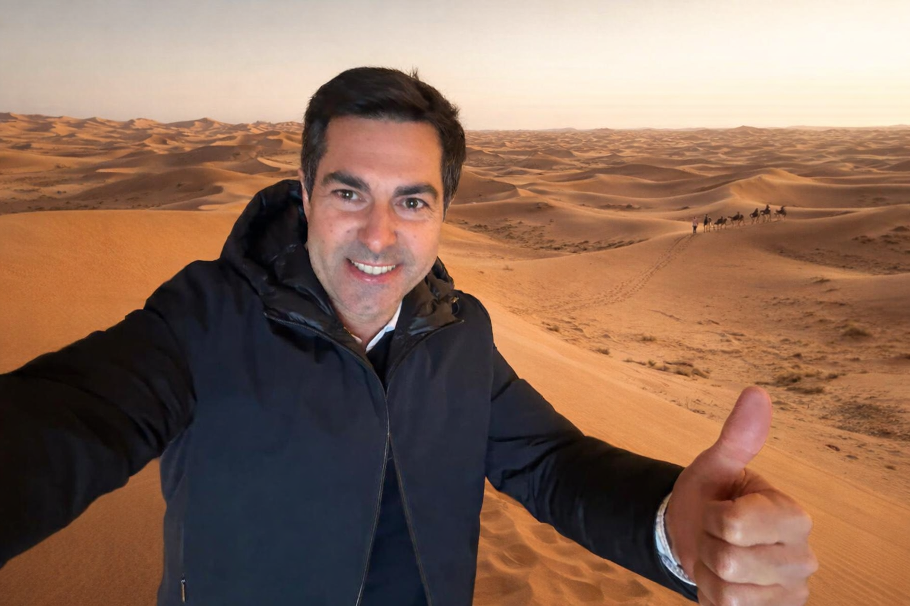

SOS al Sàhara i caos estructural a Barcelona: El Raid del Felix fa tremolar el Projecte Gaudí
Redacció de Crisis
Enviat Especial (per satèl·lit)

Imatge no trobada
felix.png
Revisa que el nom del fitxer a GitHub sigui exactament aquest.
M ARRÀQUEIX – El que havia de ser una setmana de desconnexió i pols s’ha convertit en una crisi internacional de proporcions èpiques. Felix Laencuentra, fins ara conegut com el líder del Projecte Gaudí i pilot temerari a estones lliures, ha estat vist per darrera vegada intentant canviar una roda d’un 4x4 amb una espàtula de cuina i un manual d’instruccions en arameu.
L'aventura marroquina: Entre dunes i miratges
Segons testimonis locals, Laencuentra hauria confós una duna de l'Erg Chebbi amb un munt de runes de l’Eixample, intentant aplicar-hi protocols de seguretat d'obra civil. Fonts no confirmades aseguren que Felix ha intentat convèncer un grup de dromedaris per formar un "comitè de seguiment" i que, davant la falta de cobertura, s'està comunicant amb l'oficina mitjançant senyals de fum amb olor de gasoil cremat.
Projecte Gaudí: Un vaixell a la deriva
Mentre el líder "gaudeix" de la sorra, a les oficines el panorama és desolador. L’absència de Felix ha deixat el Projecte Gaudí en un estat de paràlisi mística. Sense la seva guia, l'equip ha començat a prendre decisions basades en l’astrologia i el llançament de monedes a l'aire.
"No sabem si estem posant maons o si estem fent castells de sorra com els que el Felix fa al Marroc", comenta un membre de l'equip que prefereix mantenir l'anonimat.
La Fase 2, en perill de mort?
La gran pregunta que sobrevola el sector és: Sobreviurà la Fase 2? Els experts asseguren que una setmana sense les directrius de Laencuentra és l'equivalent a intentar acabar la Sagrada Família amb peces de Lego. S’especula que, si no torna aviat amb un tanc ple de benzina i la ment clara, la Fase 2 podria acabar convertint-se en un concurs de paelles o, pitjor encara, en un full de càlcul infinit sense filtres.
🚨 EXHORTEM A L'AVENTURER A TORNAR AMB EL TE I EL SENY 🚨
Bústia de Crisis (3)
Un becari preocupat:
"He enviat un drom al desert amb el PDF de la Fase 2, però crec que se l'ha menjat un camell. SOS."
Administració:
"Felix, torna ja! No trobem la clau del magatzem de post-its i el projecte està bloquejat."
Client Anònim:
"Si la Fase 2 falla, la culpa és de la duna número 4!"